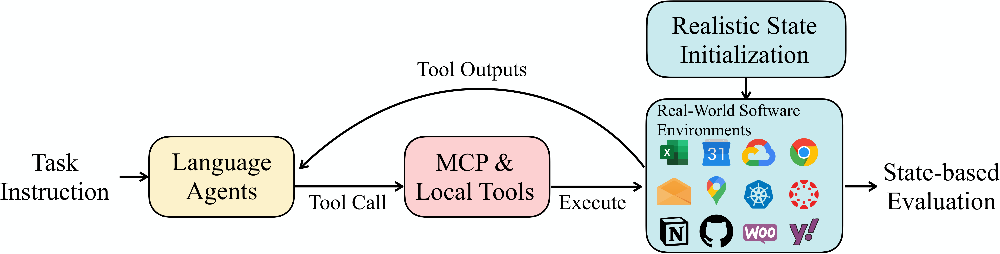
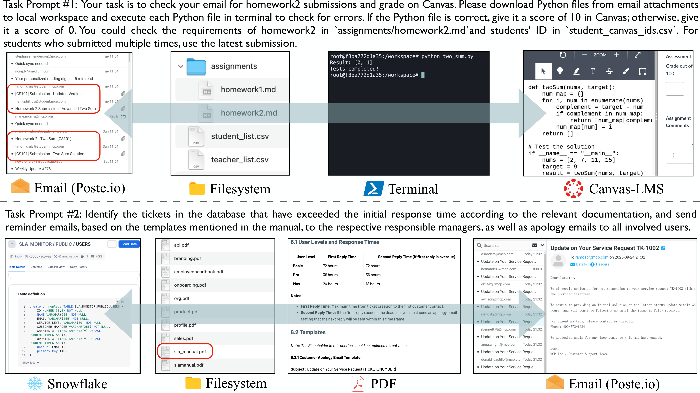
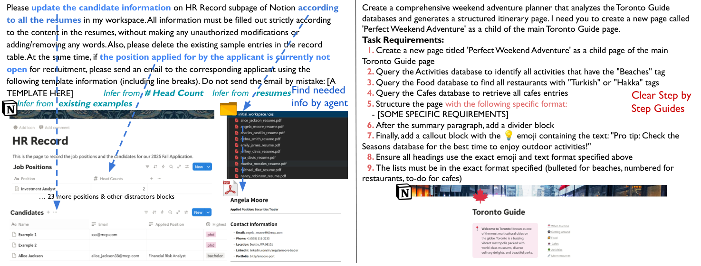
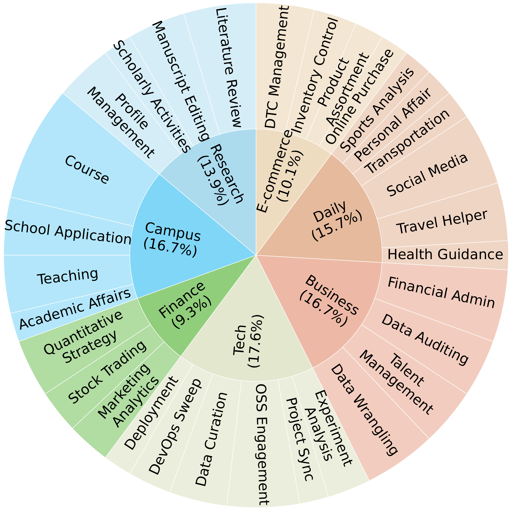
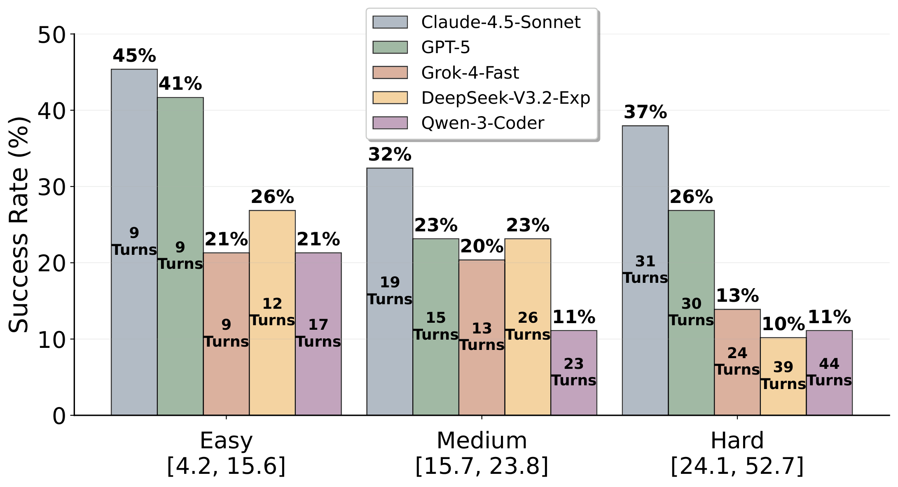
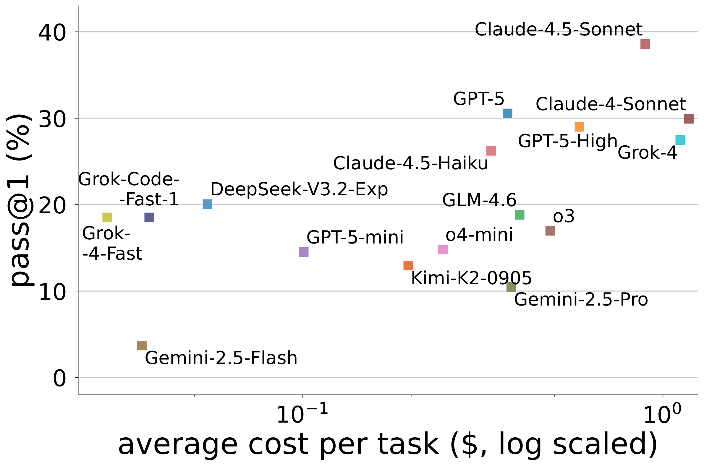

Toolathlon（Tool Decathlon）：真实、多样、长程的 language agent 工具使用 benchmark
The Tool Decathlon: Benchmarking Language Agents for Diverse, Realistic, and Long-Horizon Task Execution
①开源贡献 Open-source Artifacts
本文是一个"benchmark + 评测环境"型工作，作者把三样东西完整开源：评测代码与环境框架（含 32 个 MCP server 的实现/修订）、17 个 SOTA 模型在全部任务上的执行 trajectory 数据集，外加一个由第三方（eigent-ai）基于本工作扩展、完全本地化（PostgreSQL，免外部 API key）的 gym 复现环境。以下链接均已逐一核实可访问。
| 类型 | 是否开源 | 内容 / 链接 |
|---|---|---|
| 代码 / 评测框架 Code | ✔ | github.com/hkust-nlp/Toolathlon 官方仓库（ICLR 2026）。包含 agent 评测框架（基于 OpenAI Agents SDK v0.0.15 改造）、108 个任务的初始化脚本与评测脚本、32 个 MCP server 的封装/修订、容器化并行评测流程。README 描述支持三种模式：public 评测服务、本地容器化部署、解耦的 agent loop。许可证：仓库未在抓取到的文本中显式声明 LICENSE（截至解读日未见）。 |
| 数据集 Dataset（trajectory） | ✔ | huggingface.co/datasets/hkust-nlp/Toolathlon-Trajectories 17 个模型 × 3 次运行 = 51 个 trajectory 文件，每文件约 108 个任务，合计 5000+ 条任务执行记录（JSONL）。每条含完整对话历史 messages、可用工具 tool_calls、任务配置 config（MCP server / 本地工具 / system prompt）、统计 key_stats（turns/tokens/耗时）与 agent_cost。许可证：CC-BY-4.0。 |
| 环境 / Benchmark | ✔ | 本体即 benchmark + 环境（见上方官方仓库）。第三方扩展复现环境：github.com/eigent-ai/toolathlon_gym —— 由 eigent-ai 在本工作基础上扩展，提供 503 个多工具任务、25 个 MCP server，全部由本地 PostgreSQL 支撑（6 个数据域：Canvas LMS / Snowflake / WooCommerce / Yahoo Finance / YouTube / 铁路），无需外部 API，Docker Compose 一键启动。其文档明确写道任务格式、评测框架、MCP server 接口、数据库 schema 均源自 HKUST-NLP 的 Toolathlon。许可证：Apache-2.0。 |
| 模型权重 Weights | — | 本文不训练模型，无权重发布（纯评测工作）。 |
| 项目主页 / Demo | ✔ | toolathlon.xyz（含 leaderboard）；社区 Discord 见 README。 |
②研究动机与贡献 Motivation & Contribution
背景与问题
tool-based language agent 已经在软件工程（SWE-bench、Terminal-Bench）、deep research、web browsing 等领域显出价值；而 MCP（Model Context Protocol）的出现，让 agent 以统一标准接入成千上万的应用成为可能。但现有评测 benchmark 跟真实世界的差距很大，作者把这种差距拆成几条具体的失败模式：
- 工具/环境是"假"的。 τ-Bench、BFCL、ACEBench 这类只测 function-calling 的正确性，要么 mock 实现、要么用 LLM 模拟工具返回——回避了真实工具在不可预测环境里执行带来的所有麻烦（参数对不上、资源不存在、返回超长等）。
- 接了真 API，但环境状态是"空"或"合成"的。 AppWorld、MCPWorld、MCP-RADAR、MCPEval 等连到了真实应用，但任务大多从零状态或人工构造的简化状态起步，且偏单应用。作者强调：diversity gap 远不止工具名字/描述的不同，真正难的是跨应用的环境状态多样性 + 长程交互。
- 更真实的几个并发工作仍有短板。 LiveMCPBench、LiveMCP-101、MCPAtlas、MCPUniverse、MCPMark 等用上了 production 级 MCP server，但要么领域窄、要么状态初始化不真实、要么指令"过度详细"。比如 MCPUniverse 只 6 个域、90% 任务单应用、合成初始状态、交互 <8 turn；MCPMark 只 5 个 app 且 prompt 写得过细；GAIA2 只覆盖 mobile 域、合成环境。
- 评测方式不可靠。 不少 benchmark 用 LLM-as-judge 打分 trajectory，作者认为对真实长程任务而言，用确定性规则核验最终环境状态才是可复现、可信赖的做法。
本文的切入点
作者的核心主张是：要真正测出 agent 的真实战力，必须同时把四个维度都拉满——(1) 真实的工具与软件环境（real env），(2) 真实复杂的初始状态（states init），(3) 跨应用、长程的任务（cross-app, long-horizon），(4) 模糊的真实用户指令（realistic fuzzy prompt）+ 确定性可验证评测（verifiable execution）。论文的 Table 1 把十几个 benchmark 在这几栏上逐一打勾，Toolathlon 是唯一一个四栏全 ✓ 且 app 数（32）、平均 turn 数（26.8，Claude-4-Sonnet 作 proxy）都最高的。
为了让"真实状态"可规模化地复现，作者做了一个很实际的折中：能用远程真实应用（Google Sheets/Calendar/Gmail/Snowflake…）就用；难以为每个 benchmark 用户注册几十上百账号、且每次评测都要重置状态的场景，就用开源软件本地容器化替代——poste.io 代替 Gmail、Canvas 做课程管理、Kubernetes 做集群编排、WooCommerce 代替 Shopify。这样既有真实复杂的 observation，又能可扩展地铺设几十个账号和复杂初始状态。
核心贡献
- 提出 Toolathlon benchmark：32 个真实应用、604 个工具、108 个人工任务，覆盖 Research/Campus/Finance/Tech/Business/Daily/E-commerce 七大主题；任务平均需跨多个应用、约 20 turn（proxy 口径 26.8 turn）完成，是目前同类里"真实度 × 长程度"最高的之一。
- 一套真实且可规模化的环境构造方法：远程真实应用 + 本地容器化开源软件（poste.io / Canvas / K8s / WooCommerce）并用，配合每个任务的状态初始化脚本，实现"非空、真实、可重置"的初始环境；67%（72/108）的任务带状态初始化。
- 可靠的 execution-based 评测框架：每个任务配一个手写的确定性评测脚本，对最终环境状态做匹配（静态 ground-truth 快照，或按 reference workflow 动态拉取实时信息，如 NVIDIA 股东、12306 车次）；容器隔离 + 并行，Claude-4.5-Sonnet 跑完 108 任务仅约 70 分钟（10 并行进程）。
- 对 17 个 SOTA 模型的系统评测与诊断：给出主表与多维分析（tool-call 错误、long-context、超长输出、成本/token），并指出长程任务里"过早结束、探索不足"是普遍瓶颈；全部 trajectory 开源。
③方法 Method（benchmark 与评测框架怎么搭）
Toolathlon 把每个任务形式化为一个 POMDP $(\mathcal{S},\mathcal{A},\mathcal{O},\mathcal{T},\mathcal{R},\mathcal{U})$：状态空间 $\mathcal{S}$（如当前邮箱里的状态）、动作空间 $\mathcal{A}$（该任务可用的工具集合）、观测空间 $\mathcal{O}$（喂给模型的工具返回）、转移函数 $\mathcal{T}:\mathcal{S}\times\mathcal{A}\to\mathcal{S}\times\mathcal{O}$（由工具实现直接定义）、奖励/评测 $\mathcal{R}:\mathcal{S}\to[0,1]$（基于最终环境状态的 execution-based 评测）、以及指令空间 $\mathcal{U}$。直觉很简单：真实工具与环境天然产生比合成环境复杂得多的状态和观测，难度就来自这里。整体闭环见下图。

3.1 工具与环境：尽量真实，难复现的就本地容器化
MCP server（工具来源）。作者先定下一批想评测的真实应用，再去找对应的开源 MCP server；找不到就自己实现。由于很多开源 MCP server 有 bug 或缺少完成任务所需的工具，作者对它们做了大量修订与增强，最终得到一套高质量的 32 个 MCP server（附录 A 给了完整清单与来源，下表节选）。值得强调的是：虽然工具大多来自 MCP，但benchmark 本身并不绑定模型方必须用 MCP——只要把账号/密码/token 等凭据明确给 agent，这些任务也能用纯 GUI 或 CLI 流程完成。
| 领域 | 代表 MCP server（节选，共 32） | Local/Remote · 可写 |
|---|---|---|
| 日常 / 生活 | Google Calendar、Google Maps、Notion、HowToCook、YouTube、12306（铁路） | 多为 Remote；Notion/Calendar 可写 |
| 办公 / 文件 | Filesystem、Git、Excel、Word、PowerPoint、PDF Tools、Memory、Terminal | 多为 Local，可写 |
| 教育 / 校园 | Canvas-LMS（本地容器，可写）、Google Forms、Scholarly、Arxiv / Arxiv-Latex | Canvas 为 Local 可写 |
| 商业 / 电商 | WooCommerce（自研，本地容器，可写）、Snowflake、Yahoo Finance、Google Sheets | WooCommerce/Snowflake/Sheets 可写 |
| 技术 / DevOps | Kubernetes（本地容器，可写）、Github、Google Cloud（自研）、Weights & Biases、Hugging Face、Playwright、Fetch | K8s/GitHub/GCloud 可写 |
| 邮件 | Emails（Poste.io）（自研，本地容器，可写） | Local，可写 |
远程 + 本地容器化环境。工具只是接口，环境才是状态所在。完全用远程真实应用（如真 Gmail）来 benchmark"会改状态的任务"几乎不可行——要为每个 benchmark 用户注册上百账号、每次评测前还得重置收件箱。以往工作要么只允许读操作、要么用合成数据结构假装环境，真实度大打折扣。Toolathlon 的做法是两者并用：能远程就远程；需要复杂可重置状态的，就本地容器跑开源软件（poste.io / Canvas / K8s / WooCommerce），从而高效铺设几十个账号与复杂初始状态。相比 SWE-Bench 这类单一沙箱，它覆盖的软件种类更广。
agent 框架（4 项关键增强）。框架基于 OpenAI Agents SDK v0.0.15，每个 turn 模型可选地显式 reason 并发起 tool call。为在嘈杂真实环境里稳健评测，作者做了四处增强（附录 B）：
- Tool Error Handling：SDK 默认在调到不存在的工具或工具报错时直接 break 退出 loop；作者改成把错误作为 observation 喂回 agent 而不中断，让 agent 像在真实噪声环境里一样自己处理、继续往下走。
- Overlong Tool Response Handling：超长工具输出（如巨大 HTML、整库 dump）极易撑爆 context。框架把输出截断到 100K 字符，同时把原始长输出缓存起来，提供一个分页（默认 page size 10K 字符）检索/导航工具，避免信息丢失。该工具对所有任务可用。
- Context history management：提供工具让模型查看当前累计 token / turn 数，并主动丢弃历史 turn 来缓解 context 压力；被丢弃的历史仍可检索。当 context 超限且模型未干预时，框架自动只保留最近 10 turn 的预览 + 初始用户输入，作为兜底保证 agent 持续运行。
- 额外本地工具：除 MCP server 外，内置 (a) Python（执行任意 Python）、(b) Web Search（Google 驱动）、(c)
Done（显式声明任务完成）、(d)Sleep（等待）。统计上共 7 个本地 toolkit、16 个本地工具。
3.2 真实初始状态（67% 任务带初始化）
真实世界里任务很少从空状态开始。更关键的是：任务难度不只由指令决定，也由底层环境状态决定——同样一句话，在"只有一个相关文件的文件夹"里做，远比在"十个有用/无关文件混在一起的文件夹"里做容易（图 2 例 #2 即是后者）。因此带初始状态的任务（72/108，67%）每个都配一个状态初始化脚本在运行时铺设状态，和/或一个预置文件的初始 workspace 目录。下图两个真实例子直观展示了这种"非空、真实、带干扰"的初始环境。

3.3 可靠的 execution-based 评测
两条评测原则：(1) 必须真执行——传统 function-calling benchmark 在固定 context 下测单步 tool-call 正确率、不真正执行，作者认为这对真实场景不可靠；(2) 用确定性规则核验最终环境状态，而非 LLM judge——后者不够可复现。落地方式是：每个任务配一个唯一、手写的评测脚本，要么对 ground-truth 环境的静态快照做稳健匹配，要么按 reference 执行流程动态拉取并匹配实时信息（如 NVIDIA 股东名单）。
评测时每个任务有一个配置文件，只声明该任务必要的 MCP server（<10 个）和工具，而不是把全部 32 个 server 都给。但对每个选中的 server，作者不再筛选/检索子集，而是加载该 server 内全部工具（与主流 agent 框架现状一致）——这意味着模型仍会看到不少无关工具，需要自己识别相关工具、忽略干扰项（统计：每任务平均 69.9、最少 28、最多 128 个工具可见）。
- 容器隔离 + 并行：每个任务在独立容器里跑，严格 workspace 隔离防止互相干扰；标准 Ubuntu 24.04、16 CPU / 64 GB 机器上，10 并行进程约 70 分钟评完 Claude-4.5-Sonnet 全部 108 任务——对模型开发者拿"真实场景即时反馈"很友好。
- 动态 ground-truth：涉及实时信息的任务（股东、实时车次）走 reference workflow 动态取值再匹配，避免快照过期。
- 极简 system prompt：除工具 schema 外，system prompt 很短，只交代 workspace 目录、相对路径如何拼接、以及"自己独立完成、不要找用户确认"；并明确告知
claim done会立即终止任务、不再有机会补做（用于约束"做完再退出"，但实测仍有模型提前 claim done）。 - 任务制作成本：实现单个任务平均要一名 CS 研究生 4–6 小时；定稿阶段还有 5–6 名资深作者交叉审查，每任务每轮约 5 小时，前后历时数周。
3.4 模糊的真实指令（fuzzy prompt）
任务采集遵循三原则：真实用户需求、多应用编排、领域多样（两阶段采集：先在 50+ 应用上自由采，再针对"重要但代表性不足"的应用补采）。最有特色的是指令故意写得模糊——模仿真实用户那种简短、含糊的表达，但真实意图可以从环境状态里确定性地推断出来。例如"按 workspace 里的简历更新 Notion 的 HR Record 子页面……如果申请的岗位当前不招就发邮件"——指令既没说按什么格式填（要 agent 自己去看 Notion 里已有的样例条目），也没说去哪查岗位是否在招（要 agent 自己去 Notion 找）。这逼着 agent 去探索环境、推断意图、自主规划、并处理 tool-call 报错等意外。与之相对，MCPMark 等把详细 step-by-step 计划直接写进 prompt，削弱了 agent 的规划角色。


④实验评估 Evaluation
评测设置
- 参评模型：商业模型 GPT-5 / GPT-5-mini / GPT-5-high、o3 / o4-mini、Claude-4-Sonnet、Claude-4.5-Sonnet / -Haiku、Gemini-2.5-Pro / -Flash、Grok-4 / -Fast、Grok-Code-Fast-1；开源/开放权重模型 Qwen-3-Coder、DeepSeek-V3.2-Exp、Kimi-K2-0905、GLM-4.6。
- 预算与配置：最大 turn 数统一设为 100；主设定下只给任务"有用的"MCP server 与常用工具（但每个 server 内的多个相关工具全给，所以仍有不少无关工具混入）。
- 指标（均为越高越好）：每个模型跑 3 次，报告平均 Pass@1（成功率）及其标准差；Pass@3（3 次里至少 1 次成功的任务比例，衡量能力覆盖上限）；Pass^3（3 次全对的任务比例，衡量可靠一致性，沿用 τ-bench 的 pass^k）；以及平均 turn 数。成功与否由每任务的确定性评测脚本判定。
主要结果
下表为原文 Table 3 主结果（7 个主题分列 Pass@1 + 总 Pass@1±std / Pass@3 / Pass^3 / 平均 turn；按总 Pass@1 排序，加粗为各列最高）。
| 模型 | Research | Campus | Finance | Tech | Business | Daily | E-com | Pass@1 | Pass@3 | Pass^3 | # Turns |
|---|---|---|---|---|---|---|---|---|---|---|---|
| Proprietary 商业模型 | |||||||||||
| Claude-4.5-Sonnet | 31.1 | 42.6 | 33.3 | 42.1 | 42.6 | 35.3 | 39.4 | 38.6±2.7 | 51.9 | 20.4 | 20.2 |
| GPT-5 | 20.0 | 33.3 | 13.3 | 40.4 | 38.9 | 39.2 | 12.1 | 30.6±1.5 | 43.5 | 16.7 | 18.7 |
| Claude-4-Sonnet | 33.3 | 33.3 | 30.0 | 26.3 | 25.9 | 33.3 | 27.3 | 29.9±1.6 | 41.7 | 17.6 | 27.3 |
| GPT-5-high | 15.6 | 31.5 | 23.3 | 29.8 | 44.4 | 33.3 | 15.2 | 29.0±3.1 | 42.6 | 16.7 | 19.0 |
| Grok-4 | 24.4 | 22.2 | 13.3 | 43.9 | 24.1 | 27.5 | 30.3 | 27.5±1.7 | 38.9 | 16.7 | 20.3 |
| Claude-4.5-Haiku | 11.1 | 22.2 | 26.7 | 29.8 | 27.8 | 37.3 | 27.3 | 26.2±1.9 | 39.8 | 13.0 | 21.9 |
| Grok-Code-Fast-1 | 20.0 | 14.8 | 16.7 | 19.3 | 14.8 | 21.6 | 24.2 | 18.5±2.0 | 30.6 | 9.3 | 20.2 |
| Grok-4-Fast | 15.6 | 22.2 | 16.7 | 24.6 | 14.8 | 13.7 | 21.2 | 18.5±2.0 | 32.4 | 5.6 | 15.9 |
| o3 | 15.6 | 14.8 | 10.0 | 22.8 | 13.0 | 29.4 | 6.1 | 17.0±0.9 | 25.0 | 9.3 | 19.4 |
| o4-mini | 13.3 | 11.1 | 20.0 | 17.5 | 11.1 | 21.6 | 9.1 | 14.8±0.8 | 26.9 | 3.7 | 16.6 |
| GPT-5-mini | 11.1 | 16.7 | 20.0 | 15.8 | 9.3 | 21.6 | 6.1 | 14.5±1.2 | 23.1 | 5.6 | 19.7 |
| Gemini-2.5-Pro | 4.4 | 3.7 | 3.3 | 15.8 | 5.6 | 27.5 | 9.1 | 10.5±1.9 | 21.3 | 2.8 | 26.5 |
| Gemini-2.5-Flash | 4.4 | 3.7 | 6.7 | 3.5 | 1.9 | 3.9 | 3.0 | 3.7±1.5 | 8.3 | 0.0 | 8.3 |
| Open-Source 开放权重模型 | |||||||||||
| DeepSeek-V3.2-Exp | 11.1 | 16.7 | 23.3 | 19.3 | 14.8 | 29.4 | 30.3 | 20.1±1.2 | 27.8 | 12.0 | 26.0 |
| GLM-4.6 | 22.2 | 18.5 | 20.0 | 17.5 | 16.7 | 11.8 | 30.3 | 18.8±2.2 | 29.6 | 9.3 | 27.9 |
| Qwen-3-Coder | 4.4 | 16.7 | 10.0 | 19.3 | 14.8 | 17.6 | 15.2 | 14.5±1.9 | 21.3 | 6.5 | 28.5 |
| Kimi-K2-0905 | 8.9 | 22.2 | 16.7 | 14.0 | 5.6 | 9.8 | 15.2 | 13.0±2.0 | 22.2 | 5.6 | 26.6 |
怎么读这张表：
- 整体很低，benchmark 确实难。第一名 Claude-4.5-Sonnet 也只有 38.6%；GPT-5 / Claude-4-Sonnet / Grok-4 / Claude-4.5-Haiku 组成第二梯队（26%–30%）；其余全部 ≤20%。区分度很好。
- 开源仍明显落后。开放权重最强的 DeepSeek-V3.2-Exp 仅 20.1%，与商业头部差距清晰。
- "想更久"没用，"多看环境"才有用。同系拉高 reasoning effort（GPT-5 vs GPT-5-high）并无收益——说明在 agentic 任务里，探索新观测比延长内部推理更重要。Gemini-2.5 则吃亏在"理解需求 + 主动探索"不足，容易漏要求或中途放弃。
- Pass@3 远高于 Pass^3 → 一致性是大问题。例如 Claude-4.5-Sonnet 的 Pass@3 达 51.9% 但 Pass^3 仅 20.4%：很多任务"能做对但不稳定"。要真实可用，高成功率 + 强一致性缺一不可。
- 领域擅长各异：Claude-4.5-Sonnet 几乎全能（Campus/E-com 尤强）；GPT-5 在 Daily 最强；Grok-4 在 Tech 突出。
分析（论文最有信息量的部分）
(1) tool-call 错误。作者区分两类错误：幻觉出不存在的工具名（wrong tool name）与工具执行报错（tool call error）。结论有点反直觉：执行报错与总成功率没有显著相关——因为错误信息反而能帮模型理解工具结构、在后续 turn 里修正；真正更影响最终分数的是调错工具名，而头部模型很少犯这种错（附录 C 的 Figure 9 进一步对比"含错误 vs 无错误 trajectory"的成功率差异，多数模型确实因 tool-call 错误而受损，GPT-5 上负面影响最明显）。

(2) long-context 挑战。把任务按"所有模型上的平均执行 turn"三等分为 Easy/Medium/Hard。结果显示 turn 越多成功率总体越低；但有意思的是 Medium 与 Hard 难度差异不明显，部分头部模型在 Hard 上甚至比 Medium 更好——这说明 benchmark 的难度不完全来自标准的多步长程执行，而很可能来自模型在观测探索不充分时就过早结束任务导致失败。
(3) 超长工具输出。各模型遇到 overlong tool output（如抓超长 HTML、直接列整库数据）的 trajectory 占比约 15%–35%；大多数模型在遇到超长输出时成功率会下降，只有少数能基本维持。讽刺的是，这类任务逻辑上往往很直白（价格比较、数据抽取），但模型常常卡在处理这堆超长输出上。
(4) 成本与 token。大多数模型每任务成本 < $1；Claude-4-Sonnet、Grok-4 偏贵；Claude-4.5-Sonnet 成绩第一但成本仅排第三。Grok-4-Fast、Grok-Code-Fast-1、DeepSeek-V3.2-Exp 成本很低，是预算受限时的强力替代。输出 token 上多数模型集中在 5K–10K；o4-mini、GPT-5(-high) 等推理型产出更多 token，而 Claude 系与 Grok-4 用更少 token 拿到更好结果——再次印证"靠观测而非堆内部推理"。

(5) 典型失败模式（附录 C/E 案例）：
- 用不好给定的工具/资源：如 dataset-license-issue 任务里，已提示用
.hf_token去更新 HF 数据集页（因为 HF MCP 不支持更新），DeepSeek-V3.1 却反复尝试在 server 上访问或改用 web search，而不去写 terminal/Python 直接用 token 操作——即使已查到正确许可证（ODC-BY）仍失败。 - 真实复杂状态里"迷路"：task-tracker 任务要检查 10+ 开发者的所有分支并更新 Notion，模型没遍历完所有文件夹/分支，Notion 只填了 91 行而 ground-truth 是 116 行，漏项导致失败。
- 长程任务"偷懒"：music-analysis 要逐年（1940s）分析，Grok-Code-Fast-1 干完 1940 一年就在第 66 turn 声称完成、把 1941–1949 甩回给用户，触发提前
claim done而连第一项完整性检查都没过。
⑤洞见 Insights
- 真实环境的难，主要不在"步数多"，而在"愿不愿意把活干完、能不能充分探索观测"。Medium/Hard 难度趋平、头部模型甚至在 Hard 更好、以及大量"过早 claim done / 漏遍历 / 把活甩回用户"的失败案例，共同指向一个反直觉结论：当前 agent 的瓶颈更像是"耐心/彻底性/主动探索"，而不是单纯的长程推理深度。这也解释了为什么"调高 reasoning effort 没用，多看环境才有用"。
- 评测真实 agent，应当 execution-based + 确定性脚本，而不是 LLM judge。本文用"核验最终环境状态"的方式给出可复现、可信赖的信号；这对"benchmark 是否值得被优化"至关重要——一个能被 LLM judge 糊弄过去的指标，会把研究带偏。
- tool-call 报错不可怕，调错工具名才致命。错误信息可作为 observation 帮模型自我纠偏；这提示框架设计上"把错误回灌而非中断 loop"是对的，也提示模型训练应重点压低"工具名幻觉"。
- 方法论可迁移：用本地容器化开源软件复刻真实环境状态。poste.io/Canvas/K8s/WooCommerce 这套"以开源软件 + 容器 + 初始化脚本实现可规模化、可重置的真实状态"的做法，是任何想做真实 agent 评测/训练的人都能直接借鉴的工程范式。
局限与未来
- 规模与统计噪声：108 个任务在保证"每个都真实可验证"的前提下已属可观，但单类别样本不大（如 Finance 9.3%），±std 也不小，跨类别细粒度结论需谨慎。
- 构造成本高、扩展慢：单任务 4–6 小时实现 + 多轮人工审查，难以快速扩到上千任务；这也是为什么会出现 eigent-ai 用本地 PostgreSQL 化来降低部署门槛的扩展版本（503 任务）。
- 评测脚本的覆盖边界：确定性脚本对"正确的最终状态"匹配可靠，但对"过程合理性"或"多种合法解法"的覆盖天然有限；动态 ground-truth（实时信息）也带来对外部世界稳定性的依赖。
- 未来方向（作者立场 + 笔者判断）：推动模型在长 context、稳健 tool-call、主动探索与"做完再退出"上的改进；本文开源的 5000+ 条 trajectory 天然是分析失败模式、乃至做 SFT/RL 训练信号的好素材。
与相关工作的关系
作者把 tool-agent benchmark 放在一条"从全模拟 → 真 API+合成环境 → 真工具+真实环境"的谱系上（见正文 Table 1 与 §6）：纯模拟端（τ-Bench、BFCL、ACEBench）测 function-calling 正确率但用 mock/LLM 模拟工具；中间段（AppWorld、MCPWorld、MCP-RADAR、MCPEval、MCP-AgentBench）接真 API 但多从零/合成状态起、偏单应用；较真实端（LiveMCPBench、LiveMCP-101、MCPAtlas、MCPUniverse、MCPMark、GAIA2）用上 production MCP server，但在领域多样性、初始状态真实性、指令自然度上仍有缺口。Toolathlon 的定位是把这条线推到"真工具 + 真实环境 + 跨应用长程 + 模糊指令 + 确定性可验证"五者同时满足，并在 app 数与平均 turn 数上居前。